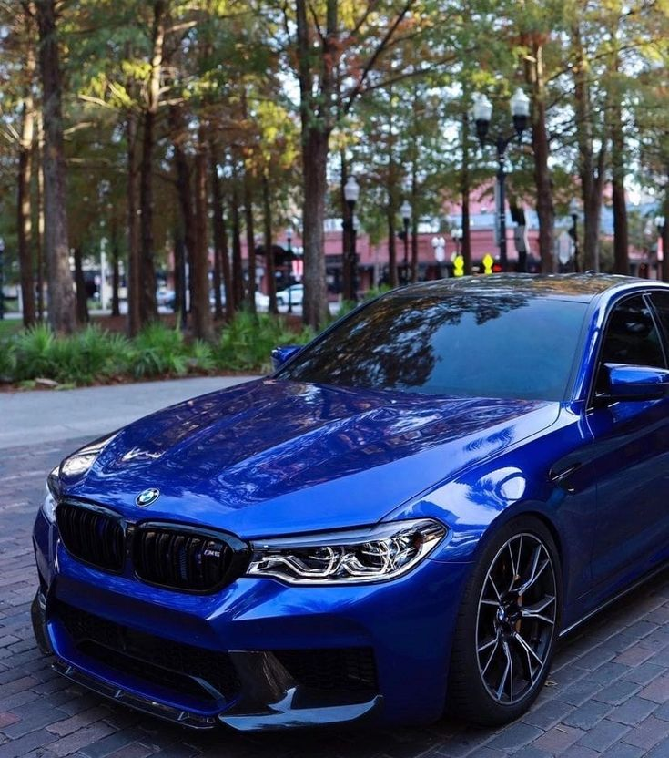
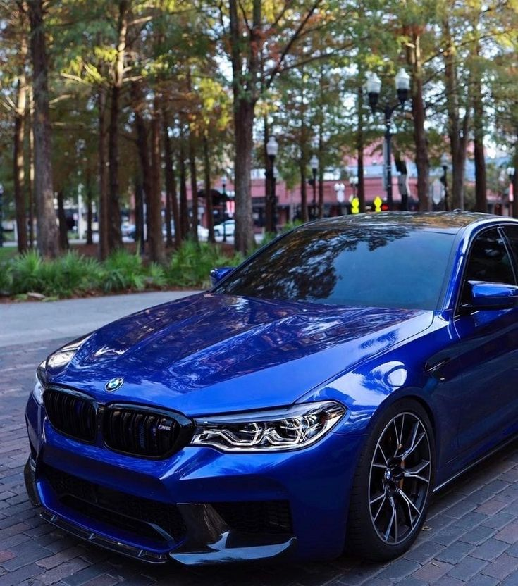

The BMW M5 is a super high-performance variant of the BMW 5
Series marketed under the BMW M sub-brand. It is considered an iconic vehicle in the sports saloon category.
The M5 has always been produced in the saloon (sedan, US English) body style, but in some countries the M5 has also been available as an estate/touring
(wagon, US English) from 1992 to 1995, from 2006 to 2010, and since 2024.
The first M5 model was hand-built beginning in late 1984 on the E28 535i chassis with a modified engine from the M1 that made it the fastest production saloon at the time.
M5 models have been produced for every generation of the 5 Series since 1984, with occasional gaps in production (1995 to 1998, 2023 to 2024).